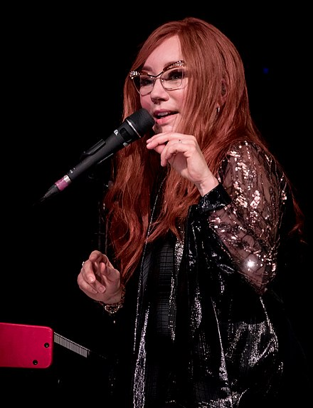

Early Childhood
Prime
At the early age of only 5 Tori Amos was aceppted into a preparatory division of PeaBody Institute. Here is where her passion for playing piano, rock and pop music. From here, her family would up and move to Silver Spring, Maryland. Reaching her young adulthood she began playing at a Gay Bar and a Piano Bar, in company of her father. Amos won a Amos won a county teen talent contest in 1977, singing a song called "More Than Just a Friend". 18
Cherokee influence
Amos references Native American culture, history and spirituality in her music and visual art. She has spoken about ancestors on her mother's side who claimed Cherokee decendents. Her maternal grandfather, Calvin Clinton Copeland, who self-identified; as Cherokee. She has cited him as a great source of inspiration and guidance, offering a pantheistic spiritual alternative to her father and paternal grandmother's traditional Christianity. 26
Nominated albums
- Night Of Hunters
- Her first studio recording. Welfth solo studio album by American singer-songwriter Tori Amos, won a The Klassik-ohne-Grenzen Prize.
- HerSelf
- Amos wrote "HerSelf" during a period of self-reflection and searching for solo album material after the failure of Y Kant Tori Read..
Young Adolescent
By the time she was 17, Amos had a stock of homemade demo tapes that her father regularly sent out to record companies and producers Producer Narada Michael Walden responded favorably: he and Amos cut some tracks together, but none were released. Despite the disappointing reaction to Y Kant Tori Read, Amos still had to comply with her six-record contract with Atlantic Records, which, in 1989, wanted a new record by March 1990. The initial recordings were declined by the label, which Amos felt was because the album had not been properly presented. The album was recorded in a church in Delgany, County Wicklow, Ireland, with Amos taking advantage of the church's acoustics. For this album, Amos used the harpsichord, harmonium, and clavichord as well as the piano.
Adulthood
On November 18, 2016, Amos released a deluxe version of the album Boys for Pele to commemorate the 20th anniversary of the original release. This follows the deluxe re-releases of her first two albums in 2015. On September 8, 2017, Amos released Native Invader, accompanied by a world tour. During the summer of 2017, Amos launched three songs from the album: "Cloud Riders", "Up the Creek", and "Reindeer King", the latter featuring string arrangements by John Philip Shenale. Produced by Amos, the album explores topics like American politics and environmental issues, mixed with mythological elements and first-person narrations. The initial inspiration for the album came from a trip that Amos took to the Great Smoky Mountains (Tennessee-North Carolina), home of her alleged Native American ancestors; however, two events deeply influenced the final record: in November 2016, Donald Trump was elected President of the United States of America; two months later.
On September 20, 2021, Amos announced her sixteenth studio album, Ocean to Ocean, which was released on October 29. The album was written and recorded in Cornwall during lockdown as a result of the COVID-19 pandemic and explores "a universal story of going to rock bottom and renewing yourself all over again".[84] Amos embarked on a European and United States tour in support of the album in 2022, and is continuing to support the album with a European Tour in 2023.[85] Matt Chamberlain and Jon Evans will again feature on drums and bass guitar respectively, their first collaboration with Amos on an album since 2009's Midwinter Graces.[86] For the 2022 and 2023 tour, Amos was joined by Jon Evans and the drummer Ash Soan.